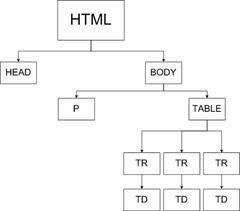

Kaskadowość arkuszy stylów - im styl jest bliżej miejsca w dokumencie, którego dotyczy, tym jest ważniejszy w hierarchii formatowania.
Nazwa „kaskadowe arkusze stylów” wynika z faktu, iż gdy reguły CSS wykluczają się wzajemnie w arkuszu zewnętrznym, arkuszu wewnętrznym oraz na poziomie elementów HTML, priorytet stylów ustalany jest hierarchicznie. Przyjęto, że oddziaływanie stylów z arkuszy zewnętrznych może być modyfikowane przez style zdefiniowane w nagłówku dokumentu, te zaś mogą być modyfikowane przez reguły zdefiniowane bezpośrednio w ciele dokumentu. Pierwszeństwo mają zatem style zdefiniowane „bliżej” formatowanego elementu.
Kolejność interpretacji reguł formatujących dany element przez przeglądarkę przedstawia się następująco:
Kaskadowość wymaga przestrzegania kolejności deklaracji. W dokumencie powinny być one umieszczane od mających numer najwyższy do opatrzonych numerem najniższym (1).
Przykładowe drzewo:
